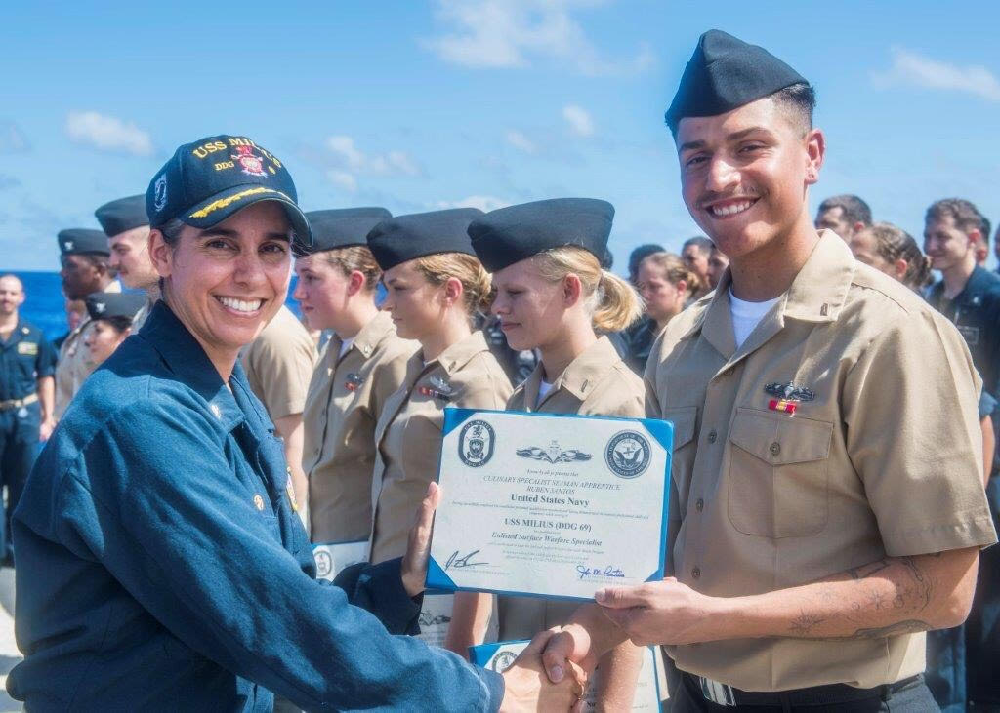

Detail oriented, military trained professional that works well with others, and puts full effort into anything that is put into his path. Excels in working in teams, learning new skills quickly, and is very self driven and motivated. Proficient in time management, self organization, workplace tidiness, professional customer service, and security surveillance. Follows rules religiously and is adaptable to all situations.
Job requirements included surveying military base-wide cameras and login information about activity hourly, maintaining premises with in-person surveillance, and preparing and serving meals to military personnel
Job requirements include moving items through outbound department safely and efficiently, keeping unit rates above 220uph while packing, 550uph rebinning, and 100uph inducting, packing items up to par with regulation so items are not to be damaged through travels to customer’s home.
Job requirements include a roving every hour on the hour, assuring that all stores were clear of any suspicious activity, maintaining professionalism with other officers and store employees and employers. Also maintaining proper filing of all paperwork and reports of any incident is explained thoroughly.
Job requirements include loading straight truck with home materials such as windows, doors and knobs, trim bunks, handrails and lumber. Then, driving to assigned job sites and unloading said materials, or picking up credited materials for customers to return to the main yard with.
Current highest level of education is a high school diploma. However, continued studies are being completed on Udemy.com for certifications listed above.
Available upon request.